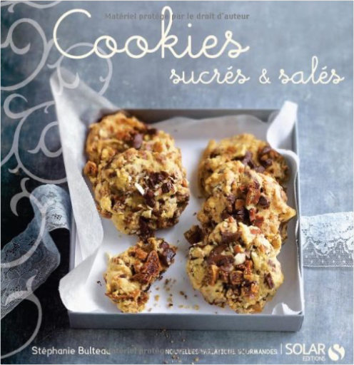

star wars, tome 40 : le nouvel ordre jedi, partie 2, la marée des ténèbres, partie 1, assautmichael a. stackpole star wars, tome 40 : le nouvel ordre jedi, partie 2, la marée des ténèbres, partie 1, assautmichael a. stackpole   star wars, tome 41 : le nouvel ordre jedi, partie 2, la marée des ténèbres, partie 2, naufragemichael a. stackpole star wars, tome 41 : le nouvel ordre jedi, partie 2, la marée des ténèbres, partie 2, naufragemichael a. stackpole cookies sucrés & salésstéphanie bulteau, , natacha arnoult Le gâteau made in USA revisité sur 30 recettes ... Un florilège de recettes aux saveurs aussi variées que surprenantes. Cookies sucrés au chocolat aux fruits aux épices ou encore à la confiture de lait ou bien salés au fromage aux légumes ou au pesto ils raviront petits et grands... pour toutes les occasions tous les goûts toutes les envies !  la couleur des sentimentskathryn stockett la couleur des sentimentskathryn stockett Jackson, Mississippi, 1962. Dans quelques mois, Martin Luther King marchera sur Washington pour défendre les droits civiques. Mais dans le Sud, toutes les familles blanches ont encore une bonne noire, qui a le droit de s'occuper des enfants mais pas d'utiliser les toilettes de la maison. Quand deux domestiques, aidées par une journaliste, décident de raconter leur vie au service des Blancs dans un livre, elles ne se doutent pas que la petite histoire s'apprête à rejoindre la grande, et que leur vie ne sera plus jamais la même. Passionnant de bout en bout, "La Couleur des sentiments" a bouleversé l'Amérique et déjà conquis plus de deux millions de lecteurs, parmi lesquels un certain Steven Spielberg. |


 Made with Delicious Library
Made with Delicious LibraryNancy, State zipflap congrotus delicious library Thomas, Julien